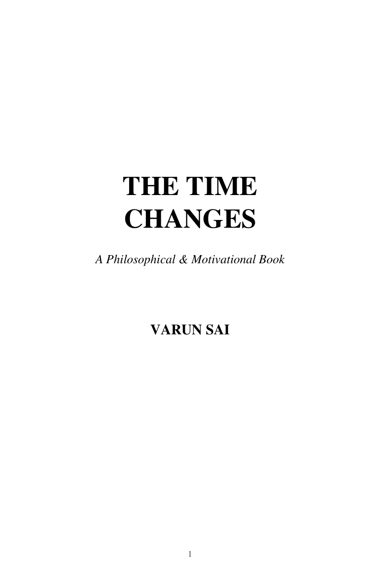

A journey of transformation
The Time Changes
Time changes everything. But sometimes, the greatest change begins within us.
The Book
The Time Changes

A journey from awareness to transformation.
The Time Changes is a philosophical and motivational journey about the moments when we begin to question who we are, what we are doing, and where we are going.
It explores the struggles many young people face — overthinking, comparison, fear, failure, confusion, waiting for the right moment, and seeking approval.
The book invites readers to look within, understand themselves, build discipline, find courage, take action and gradually transform the way they live.
Get the Book
Choose your preferred way to read or own The Time Changes.
The Journey
Twenty-One Chapters
A journey through the thoughts, struggles and choices that shape personal transformation.
Awareness
Seeing yourself and your life more clearly.
Acceptance
Understanding where you are before deciding where to go.
Identity
Discovering who you are beyond other people's opinions.
Discipline
Turning intention into consistent action.
Courage
Moving forward even when fear is present.
Action
Stopping the wait and beginning to move.
Failure
Learning from what did not go as planned.
Resilience
Standing again after falling.
Purpose
Finding direction in the way you choose to live.
Transformation
Becoming different through the choices you make.
Coming in the Future
Future Books
Every book begins with an idea. More stories and reflections may come with time.
Future Work
New ideas are taking shape. This space will be updated when the next book is ready.